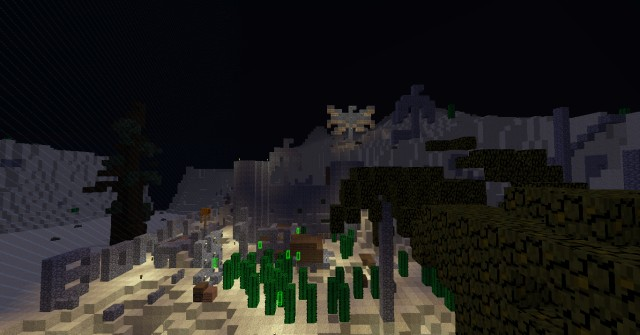
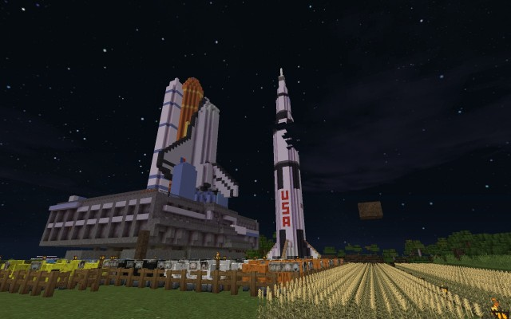
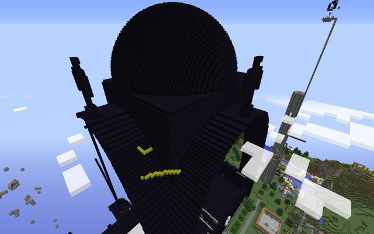
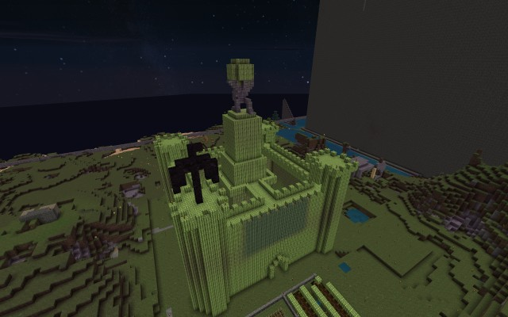

MCBuild is a custom client for Minecraft with a lot of additional functions but it's primary emphasis is auto-building. It is capable of building in creative or survival mode, and will work on servers with Anti-cheat, however due to its nature, it will work in multiplayer only. If you want to use it in a single-player game, you nevertheless can run your own server locally and load it with your SP world, or access a single-player game shared by another user on the network.
Unlike many custom/hacked clients available around, mcbuild uses a completely different approach. It is not quite correct to call it a client at all - instead it's a proxy-like application that sits between your client and the server you play on and manipulates Minecraft protocol only. It passes most Minecraft traffic transparently, while inserting, dropping or modifying some packets as needed.
This has both advantages and drawbacks. On one hand you don't need to give up on your favorite client or apply any mods to it - you can continue using it as is. If you have a hacked client or mods you use, the functions from mcbuild will add to them, not replace them. On the other hand, mcbuild lacks the possibility to add any GUI elements on your client and the only way to control it or receive information from it is via minecraft protocol. Most commands and notifications happen through the chat, and a few by means of spawning phantom blocks or entities. Consider it like this - mcbuild is a CLI, not a GUI application and it will take some ambition to learn to use it, but I hope you will appreciate its potential.
MCBuild started back in 2012 as "minemap" - a mere mapping tool for Minecraft. Initially tested for the Anvil map data generated in the single play, I wanted to extend it to the multiplayer games as well and started reading on the Minecraft protocol. At that time, Minecraft 1.2 was the current version and I figured out, the map data could be simply extracted from the network traffic - I just needed to record my gaming session with Wireshark and extract necessary messages from the PCAP.
But starting with the version 1.3, Minecraft intrroduced protocol encryption and the capturing method could be no longer used. So, I came with the idea of "mcproxy" - a transparent proxy for the Minecraft protocol, that would hook into encrypted connection between the client and the server by using the man-in-the-middle (MITM) principle. The standard Minecraft client would connect to the proxy, and the proxy would connect to the remote server, passing all traffic transparently. Since the proxy process establishes the encryption session on both sides, it will have access to the plaintext traffic. I quickly realized that this setup has more potential than just passively mapping stuff.
At that time I joined the infamous 2b2t.net server (before it became .org). I'm still an active player there and most of the functions developed for MCBuild related to my experience on that server. Even the default server to connect to is 2b2t. The most famous feature of that server is that the map was never reset, and survived through all generations of Minecraft starting from the Alpha times at the spawn, this, and also a huge number of players that went through the server, combined with the absolute anarchy and massive use of hacked clients has left the spawn area resembling a nuclear explosion site. Even many miles across, the players managed to wreck the world beyond recognition.
The first problem every newbie player like myself was facing is escaping the spawn and finding any wood, essential to basic survival. The first tree I found was over 1.5km away from my spawn point - everything closer was ripped out or burned by the endless herds of players. But the next step was a bit trickier - as I wanted to set up my first enchanting table, I could not find any sugarcane many miles around to make my books. This is where I started extending the functionality with a simple function to search for certain blocks. I could find whole 3 blocks of sugarcane in the 4 km radius from spawn - by some terrain generator glitch they landed deep underwater and so survived the greedy players.
Later I started extending the functionality with various hacking functions like self-made Killaura, player notification, entity finder, etc. Then, in 2014 came the idea to implement the auto-building. I completely redesigned the mcproxy from scratch and started implementing first auto-building features. The development was a bit delayed by the switch to a new Minecraft protocol which came with 1.6.6 and a complete redesign of the framework to cope with the increased complexity of the code.
The development progressed slowly, but culminated in April/May 2015, as I participated in the April Fools and then in the Third Spawn Incursion, the yearly events semi-spontaneously happening on 2b2t. In the April Fools event I already had a somewhat reliably working implementation which I used to build a crude castle in the Cactus Republic base.
After the April Fools event, I went on more implementing and testing in the harsh conditions of 2b2t and started building a secret "Rocket Valley", with its first exhibits - a full size Saturn V and Space Shuttle replicas (models courtesy Eocen and DNV970 at PlanetMinecraft)
Finally, in May 2015 I participated in the Third Spawn Incursion event. At that point, MCBuild gathered a lot of new features, fixes and special building modes making building more efficient and safe in survival, anti-cheat and exceptionally laggy environment of 2b2t. The event culminated with the erection of the Wrath Outpost (aka SIB - Spawn Incursion Base) an enormous obsidian structure for which I built the most of the great arches,the curved entrace roof and the dome, as well as some minor elements.
Another prominent building sitting right next to Wrath Outpost was my Melon Castle - a castle built completely out of ~8000 melon blocks. Although it was destroyed at least 4 times during the Incursion, I was able to quickly rebuild it. The last version was still standing 2 months later - heavily nibbled upon by the hungry spawn escapees.
Later in the Summer 2015, I used MCBuild to build some of the structures in the King's Landing base. All these events provided a huge amount of experience that helped me eliminate more bugs, extend functionality and make improvements into building process. Finally the development came to the stage where I could release it as a more-or-less feature complete, stable and documented version to the general public. Please enjoy using it, bug reports and suggestions for improvements are welcome!
MCBuild and its direct dependency libhelper are licensed under GPL2.